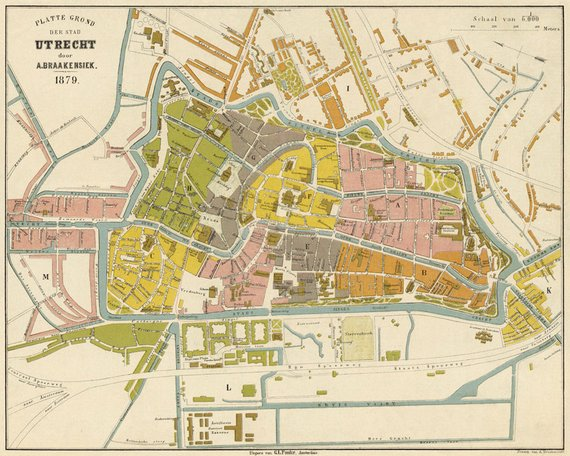
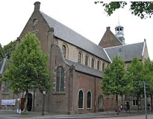
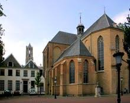

Mapa Antiguo de Utrecht

Origen
El nombre de Utrecht proviene de la palabra latina Traiectum e indica un lugar donde durante la época romana el río Rin era vadeable'. La u viene de UUT una antigua palabra holandesa que significa “río abajo”. Entonces el origen de la palabra Utrecht debe entenderse como Uit-Trecht. Utrecht es una de las primeras ciudades de Los Países Bajos con una legislación municipal, tiene una larga y rica historia y un importantísimo centro histórico cultural.
Utrecht fue habitada por los romanos en el año 47 DC. Que estableció en este punto una pequeña fortificación.En el siglo III tribus germánicas invadieron estos territorios dando lugar al abandono de la fortaleza. A mediados del siglo VII, la ciudad fue escogida como sede de misiones, se estableciendo en ella San Wilibrodo, nombrado en 695 obispo de los Frisones. El nuevo obispo mandó construyó una iglesia en el sitio que ahora se encuentra
la Catedral de Utrecht que después de un incendio ocurrido en 1253 esta quedó estropeada, el cabildo aprovechó esta oportunidad para ir reconstruyendo la iglesia. Por ese entonces predominaba en Francia el estilo arquitectónico gótico, y Utrecht siguió esa moda. La nueva iglesia cuenta con arcos góticos. En 1254 se comenzó con el coro de la iglesia, luego siguieron las torres y la nave transversal de la nave. También fue un centro religioso muy importante, lugar de residencia de obispos cuyas casas con pináculos y torres se conservaron y aún se pueden contemplar.


Posee la torre más alta del país, originalmente unidas por una nave, fueron separadas por un tornado el 1 de agosto de 1674, se encuentra en el punto donde se cruzan cuatro iglesias: la iglesia de San Pedro (de Pieterskerk), la iglesia de San Juan Bautista (de Janskerk), la iglesia de la abadía de San Pablo (de kerk van de Paulusabdij) y la iglesia de Santa María (de Mariakerk), estas dos últimas no existen actualmente.